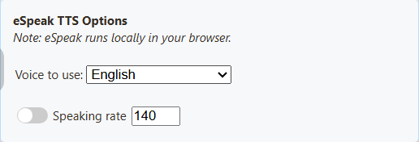

1. 打开聊天朗读
尚未连接聊天？ 从这里开始：安装 SSN、添加来源并打开停靠面板。
打开 SSN 扩展弹出菜单 或桌面应用的 来源与设置.
位于 主聊天叠加层与控制停靠面板，展开 消息 — 文字转语音。打开此处所示的开关：

2. 选择免费语音
在同一部分中，滚动至 TTS 服务提供商。选择 Piper TTS，然后选择语音。

使用 复制链接 ，位于以下选项旁： 主聊天叠加层与控制停靠面板 以取得更新后的链接。
3. 在 OBS 中播放
- 添加 OBS 浏览器来源 并粘贴该链接。
- 启用 通过 OBS 控制音频 ，在其属性中设置。
- 发送一条聊天消息。检查来源音量表，再录制一小段。
想自己听到吗？ 在 OBS 高级音频属性中，选择 监听并输出 为该来源设置。仅保留一个副本朗读聊天。
试听免费语音
喜欢其他音色？这四种语音免费。点击播放进行比较。
西班牙语与葡萄牙语示例
在 SSN 设置的语音列表上方选择语言，然后使用 测试。Piper 提供西班牙、墨西哥、巴西及葡萄牙语音；Kokoro 另外提供三种西班牙语及三种巴西葡萄牙语语音。
Piper - 西班牙语（西班牙）
DaveFX
Kokoro - 西班牙语
Dora
Piper - 葡萄牙语（巴西）
Faber
Kokoro - 葡萄牙语（巴西）
Dora
免费本地合成，首次需要下载。示例不包含加载时间。Piper 是更轻量的入门选择；Kokoro 在 CPU 上可能较慢。若语音跟不上聊天，请使用 Piper。
示例文本与测试详情
四个英语示例朗读以下内容： 欢迎来到直播间！感谢加入。接下来我们玩什么游戏？ 已禁用名称朗读。
已于 2026 年 9 月 7 日在 Windows 11 的 OBS 32.2.2 中验证：聊天消息到达真实停靠面板、生成语音、使浏览器源音量表产生变化，并出现在录制内容中。此次 CPU 测试中，Kokoro 开始发声的等待时间明显更长。这些片段用于试听语音，不反映等待时间。
System TTS 在此电脑上提供了五种语音，但浏览器源录制中未产生音频。该结果仅针对这套配置；请始终测试最终 URL 及录制结果。由于未使用付费凭据，本次未包含云端语音。
需要帮助？
我的聊天平台支持 TTS 吗？
如果 SSN 以文字形式接收到聊天，就可以将其朗读。YouTube、Twitch、TikTok 及其他来源使用相同功能。聊天平台本身不需要支持 TTS。
没有语音？
先检查停靠面板是否接收到聊天，再检查 TTS 开关、提供商及过滤器。使用新复制的链接。等待首次模型下载完成。
Chrome/Edge 可用，但 OBS 不可用？
OBS 使用独立的浏览器及语音列表。即使列出了语音，System TTS 也可能无法工作。请尝试 Piper、Kokoro、Kitten 或 eSpeak。虚拟音频线无法解决未生成语音的问题。
音量表有变化，但录制无声？
检查 OBS 中的静音及录音轨道分配。若还想自己听到，请使用 Monitor and Output；避免再次捕获该监听输出。 OBS 音频指南.
可以改用 OBS 停靠面板或精选聊天吗？
OBS 自定义浏览器停靠面板是控制面板，不是上方使用的场景浏览器源。对于精选聊天，请在该叠加层自身的弹出选项中启用 TTS 并复制链接。仅保持一个页面发声，避免重复语音。
比较所有提供商：要求、费用及取舍
免费本地语音先试 Piper；若更喜欢 Kokoro 的音色，也可进行比较。 若响应速度比逼真程度更重要，请尝试 eSpeak。Kitten 也是小型英语选项。决定前先试听。
| 提供商 | 适合用途 | 取舍 | 要求 / 费用 |
|---|---|---|---|
| Kokoro | 英语、西班牙语及巴西葡萄牙语语音。 | CPU 运算较多；首次发声可能较慢。 | 免费，无需密钥。下载模型/语音资源；使用 CPU 或受支持的 WebGPU。 |
| Piper | 本地神经网络语音；提供英语、西班牙语和葡萄牙语选项。 | 质量及发音因语音而异。 | 免费，无需密钥。下载所选模型（HFC medium 约 63 MB）及引擎文件。 |
| Kitten | 小型英语模型，提供八种语音。 | 语言及语音风格较少。 | 免费，无需密钥。当前捆绑模型约 24 MB，另需引擎/语音文件；使用 CPU。 |
| eSpeak | 轻量、多语言、启动快。 | 刻意采用合成/机器人音色。 | 免费，无需密钥。加载随附引擎/语言文件；无需神经网络模型或 GPU。 |
| 系统 TTS | 使用浏览器或桌面应用提供的语音。 | 语音列表及 OBS 捕获情况各异；部分语音需要互联网。 | 无 SSN 提供商费用。需要可用的系统/浏览器语音；请在实际播放页面测试。 |
| ElevenLabs | 语音 ID、模型选择及稳定性/风格控件。 | 可能存在账号限制、网络延迟及 API 费用。 | 需要互联网、API 密钥及可访问的语音 ID。聊天文字会发送给提供商。 |
| Google Cloud | 具名语音，提供语言、语速和音高控件。 | 并非每种语音都支持所有控件。 | 需要互联网、已启用的 Cloud TTS API、API 密钥及匹配的语音/语言。适用计费/配额。 |
| Gemini | 语音风格及文字表达指令。 | 预览模型及配额可能变化；延迟各异。 | 需要互联网、Gemini API 密钥及所选 TTS 模型的访问权限。请检查账号限制/计费。 |
| Speechify | 语音 ID，附带速度、语言及模型控件。 | 需要 API 访问权限；可用语音取决于账号。 | 需要互联网及 Speechify API 密钥。适用 API 使用条款/限制。 |
| OpenAI | 具名语音，提供模型及格式控件。 | 需要 API 计费及互联网；账号订阅单独计算。 | 具备 TTS 访问权限的 API 密钥。聊天文字会发送到配置的端点。 |
| 自定义 / 本地 | 使用自己的兼容语音服务器。 | 设置最多：端点、模型、语音及浏览器访问必须一致。 | 可访问的 OpenAI 兼容语音端点；如有要求还需密钥。本地硬件或托管成本各异。 |
上方下载大小仅指模型文件，不是总内存用量或全部所需资源。本地提供商使用运行停靠面板/叠加层的电脑；首次使用可能较慢，且 OBS 有自己的缓存。云端提供商节省本地计算资源，但会将文字发送到设备外。
OBS： 下方四个本地提供商通过了浏览器源录制测试。云端/自定义提供商会返回音频供页面播放，但此次审查未使用真实账号测试。即使 System TTS 列出了语音，也需要单独测试。
提供商设置与语音名称
实际桌面应用设置，使用全新配置文件截取。打开你要使用的提供商；API 密钥字段有意留空。这些控件配置选中的 SSN 停靠面板或叠加层。选择截图可查看原尺寸。
Kokoro
在 SSN 中选择语音；模型会在发声页面加载。可选英语美式/英式、西班牙语及巴西葡萄牙语。使用语言过滤器查找语音；Test 会以所选语言播放短句。若想降低 CPU 使用率，请尝试 Piper。

语音名称及 URL 值
- Heart（美式女声）—
af_heart - Alloy（美式女声）—
af_alloy - Aoede（美式女声）—
af_aoede - Bella（美式女声）—
af_bella - Jessica（美式女声）—
af_jessica - Kore（美式女声）—
af_kore - Nicole（美式女声）—
af_nicole - Nova（美式女声）—
af_nova - River（美式女声）—
af_river - Sarah（美式女声）—
af_sarah - Sky（美式女声）—
af_sky - Adam（美式男声）—
am_adam - Echo（美式男声）—
am_echo - Eric（美式男声）—
am_eric - Fenrir（美式男声）—
am_fenrir - Liam（美式男声）—
am_liam - Michael（美式男声）—
am_michael - Onyx（美式男声）—
am_onyx - Puck（美式男声）—
am_puck - Santa（美式男声）—
am_santa - Emma（英式女声）—
bf_emma - Isabella（英式女声）—
bf_isabella - George（英式男声）—
bm_george - Lewis（英式男声）—
bm_lewis - Alice（英式女声）—
bf_alice - Lily（英式女声）—
bf_lily - Daniel（英式男声）—
bm_daniel - Fable（英式男声）—
bm_fable - Dora（西班牙语）-
ef_dora - Alex（西班牙语）-
em_alex - Santa（西班牙语）-
em_santa - Dora（巴西葡萄牙语）-
pf_dora - Alex（巴西葡萄牙语）-
pm_alex - Santa（巴西葡萄牙语）-
pm_santa
Kitten
八种英语语音：编号为 2、3、4 和 5 的男声及女声。示例使用 Voice 4（Female）。

语音名称及 URL 值
- Voice 2（男声）—
expr-voice-2-m - Voice 2（女声）—
expr-voice-2-f - Voice 3（男声）—
expr-voice-3-m - Voice 3（女声）—
expr-voice-3-f - Voice 4（男声）—
expr-voice-4-m - Voice 4（女声）—
expr-voice-4-f - Voice 5（男声）—
expr-voice-5-m - Voice 5（女声）—
expr-voice-5-f
Piper
选择匹配的语言和模型。示例使用 HFC medium。仅设置语言不会翻译语音。

语音名称及 URL 值
- 美式英语女声（HFC）- 中等质量 —
en_US-hfc_female-medium - 西班牙西班牙语（DaveFX）- 中等质量 —
es_ES-davefx-medium - 墨西哥西班牙语（Ald）- 中等质量 —
es_MX-ald-medium - 巴西葡萄牙语（Faber）- 中等质量 —
pt_BR-faber-medium - 巴西葡萄牙语（Edresson）- 低质量 —
pt_BR-edresson-low - 葡萄牙葡萄牙语（Tugao）- 中等质量 —
pt_PT-tugão-medium
eSpeak
选择一种语言语音，并可选调节语速。该引擎有意采用机器人音色。

语音名称及 URL 值
- 英语 —
en - 西班牙语 —
es - 巴西葡萄牙语 —
pt-br - 葡萄牙葡萄牙语 —
pt-pt

Fish Audio
选择 Fish Audio ，位于聊天停靠面板、精选叠加层、TTS 页面或 Flow Actions 的 TTS 提供商菜单中。输入自己的 Fish Audio API 密钥，然后使用现有的 Test TTS 按钮。可选的 Voice ID 可从以下位置选择语音： Fish Audio；复制语音模型 ID，而不是名称或页面 URL。留空则使用服务的默认语音。
高级选项包含模型及语速（0.5–2）。SSN 默认使用 s2.1-pro-free；免费额度的可用性及合理使用条款由 Fish Audio 决定。付费模型需要账户余额。SSN 不会使用付费模型重试失败的免费请求。观众音量请在 More TTS options 中设置。文字会发送到 Fish Audio，由该服务检测语言。
OBS / 浏览器设置： 运行 SSN 现有的 以 Fish 模式运行的本地 TTS 桥接 ，在 OBS 电脑上运行。将其 SSN_TTS_TARGET_BEARER 环境变量设为 Fish API 密钥，并启动 node scripts/local-tts-bridge.cjs --mode fish。在 Fish Audio 面板中，设置 OBS / 浏览器桥接 URL 为 http://127.0.0.1:8124/v1/audio/speech；将终端显示的本地桥接令牌粘贴到弹出菜单的 API密钥 字段。令牌会在重启后改变，除非设置 SSN_TTS_BRIDGE_TOKEN 为较长的随机密钥；请将含令牌的叠加层链接保密。保持桥接运行、测试语音，并在 OBS 中使用生成的叠加层 URL。如果希望音频进入 OBS 混音器，请在浏览器源设置中启用 Control audio via OBS。托管浏览器页面直接向 Fish 发出的请求缺少 CORS 权限；桥接提供浏览器可访问的音频响应。
使用桥接时，添加 &fishendpoint=http%3A%2F%2F127.0.0.1%3A8124%2Fv1%2Faudio%2Fspeech 到 URL，并省略 fishkey ，当密钥由桥接持有时。
URL 参数： &ttsprovider=fish&fishkey=YOUR_KEY&voicefish=VOICE_ID&fishmodel=s2.1-pro-free&fishspeed=1。通过常规控件启用 TTS。请将包含密钥的生成 URL 保密。接收页面使用 Fish Audio 时，Event Flow 现有的 Speak Text 语音覆盖选项接受 Fish 语音 ID。

OpenAI
选择支持的语音/模型并输入 API 密钥。ChatGPT 订阅不提供 API 额度。使用 OpenAI 时保留默认端点。


高级：手动编辑 TTS URL
建议先进行的测试：
dock.html?session=YOUR_SESSION&speech=en-US&ttsprovider=kokoro
dock.html?session=YOUR_SESSION&speech=en-US&ttsprovider=piper
dock.html?session=YOUR_SESSION&speech=en-US&ttsprovider=kitten
若使用葡萄牙语或西班牙语，请先尝试以下选项：
dock.html?session=YOUR_SESSION&speech=pt-BR&ttsprovider=piper&pipervoice=pt_BR-faber-medium
dock.html?session=YOUR_SESSION&speech=pt-BR&ttsprovider=espeak&espeakvoice=pt-br
dock.html?session=YOUR_SESSION&speech=es-ES&ttsprovider=piper&pipervoice=es_ES-davefx-medium
dock.html?session=YOUR_SESSION&speech=es-ES&ttsprovider=espeak&espeakvoice=es
高级：运行自己的本地 TTS 服务器
需要私有语音、特定语音模型或 Kokoro-FastAPI、openedai-speech 等服务器时，本地 TTS 服务器很有用。播放 TTS 的页面必须能访问端点。

dock.html?session=YOUR_SESSION&speech=en-US&ttsprovider=customtts&openaiendpoint=http://127.0.0.1:8124/v1/audio/speech&voiceopenai=af_bella
localhost 指运行页面的电脑。如果 TTS 服务器在另一台电脑上，请使用该电脑的局域网 IP，或在 OBS 电脑上运行桥接。